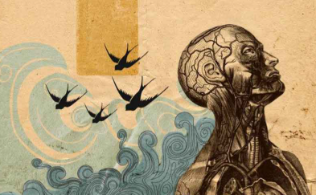

The Limits of Freedom (Los Limites de la Libertad) → representa la libertad y la angustia existencial humana
El ser humano y su existencia
¿Somos libres o estamos determinados por factores biológicos, sociales, económicos y tecnológicos? ¿Cuál es nuestro lugar
en el universo en una época de inteligencia artificial avanzada, crisis climática y exploración espacial? La visión humanista
enfatiza la autonomía del sujeto, la dignidad intrínseca de toda persona (independientemente de origen, género, condición
económica o capacidades), y la responsabilidad ética hacia los demás y hacia el planeta. Desde esta perspectiva, el ser humano
no es un mero producto de causas externas ni un ser pasivo, sino un agente capaz de cuestionar, decidir y transformar su
realidad y la de su comunidad, incluso en contextos de condicionamiento fuerte (estructuras de poder, algoritmos que moldean
deseos, desigualdades heredadas). Pensadores como Sartre (“el ser humano está condenado a ser libre”) y Martha Nussbaum (enfoque
de capacidades) recuerdan que la libertad no es ausencia de límites, sino la capacidad de ejercer opciones significativas con
conciencia y cuidado ético. En el México contemporáneo, esta reflexión cobra urgencia al confrontar realidades como la precarización
laboral, la violencia estructural, la discriminación sistémica y el impacto de la tecnología en la identidad y las relaciones humanas.
Dato importante
Estos problemas no tienen respuestas únicas ni definitivas; su verdadero valor reside en el proceso de reflexión crítica y
colectiva que generan, en cómo nos confrontan con nuestra finitud y libertad, y en cómo nos ayudan a vivir con mayor autenticidad,
empatía y compromiso ético en un mundo complejo y desigual. En el bachillerato, explorar estas cuestiones fomenta la formación de
ciudadanos conscientes, capaces de resistir la deshumanización y de contribuir a sociedades más justas e inclusivas.